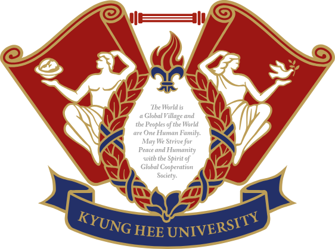

한양대 공과대학
한양대 자연과학대학
한양대 공과대학
한양대 자연과학대학

경희대 이과대학
PS:LAB REPORT
박정은 학생을 위한
퍼스널 입시 분석 보고서
"데이터를 기반으로 설계하고, 입학사정관의 시선으로 완성합니다."
CONSULTING OVERVIEW
안녕하세요, PS:LAB입니다.
서울대 · 고려대 · 한양대 · 경희대 재학 중인 선배들이 모인 입시 전략 팀입니다. 직접 겪어낸 강남·송파 입시의 정답을 '데이터 리포트'로 전달하며, 합리적인 비용으로 최고의 퀄리티를 보장합니다.
고도화된 AI 환경으로 방대한 입시 데이터를 크로스체크합니다.
당장 실행 가능한 디테일만 제공합니다.
명문대 합격생이 직접 작성하는 고퀄리티 리포트.
체계적인 3단계 리포트 솔루션
정밀 데이터 분석
생기부를 입학사정관의 시선에서 냉정하게 평가하여 보완할 수 있는 핵심 키워드를 도출합니다.
스토리보드 기획
목표 대학 인재상에 완벽히 부합하는 방향성을 설정하고 탐구 및 독서 활동을 설계합니다.
실전 리포팅 & 피드백
실제 학교 활동에 바로 적용할 수 있는 디테일한 가이드 리포트를 제공하며 피드백을 진행합니다.
🎓 학생 프로필
- 이름 박정은
- 소속 남해제일고등학교 3학년 (농어촌 전형 가능)
- 진로 환경공학 지망 화학생명공학 → 환경공학 전환
- 모의고사 국4 / 수4 / 영2 / 탐4 수능 최저 리스크 매우 높음
- 내신 2.52등급 1.86에서 시작해 3.00 저점 후 반등 중
- 비고 물·화·생·지 모두 이수하는 우수 일반고 인프라
🎯 지원 전략 분류 (농어촌 & 탐구형 면접)
👨💼 담당 멘토진
성적 데이터 방어 최우선! · 수학/과학 내신 집중 컨설팅
로봇공학 → 화학과 진로 변경 합격자 · 심화 탐구 기획
내신 2.7 → 학종 합격 / 농어촌 전형 입시 전문가
ACADEMIC DATA ANALYSIS
📈 학기별 내신 추이
1학년 초반 1.86의 우수한 성적을 보였으나 2학년 1학기에 3.00까지 하락했습니다. 다행히 2-2학기 2.88로 반등하며 하락세를 멈춘 흐름은 긍정적입니다. 3학년 1학기 대반전이 핵심입니다.
📊 교과 등급 및 모의고사 진단
| 과목 | 1-1 | 1-2 | 2-1 | 2-2 | 모의고사 |
|---|---|---|---|---|---|
| 국어 | 2 | 2 | 1 | 2 | 4등급 |
| 수학 | 2 | 3 | 3 | 4 | 4등급 |
| 영어 | 1 | 1 | 3 | 1 | 2등급 |
| 한국사 | 1 | 1 | 2 | 1 | 4등급 |
| 통합사회 | 1 | 2 | - | - | - |
| 과학 (화학1) | 2 | 3 | 5 | 3 | 4등급 |
| 과학 (생명과학1) | - | - | 2 | 2 | 4등급 |
| 과학 (지구과학1) | - | - | 3 | 4 | 3등급 |
STUDENT RECORD EVALUATION
일반고를 압도하는 탐구력
- 수학적 모델링 1학년 세특은 피상적이나, 수학II에서 SIR 모델·로지스틱 함수로 감염병 확산을 분석한 것은 정점을 찍은 훌륭한 활동.
- 집요한 실험 태도 비스페놀A 노출 실험(45일 투자), 토양 채취 및 분석 등 의문을 실험으로 검증하는 수준이 자사고급.
- 비판 반면 생명과학 '드럭 리포지셔닝' 탐구 등 동기가 결여된 나열식 탐구는 1500바이트 낭비입니다. 3학년엔 하나의 활동을 길고 깊게 쓰세요.
의·약학 ➔ 환경공학 자연스런 전환
- 진로 전환 1학년 화학생명공학 → 2학년 환경공학 전환은 매우 성공적. 억지 연계 없이 교과 역량을 살리는 정석적 접근입니다.
- 환경공학 실천 마늘 항균 실험, 칡 액비 제작, 오징어뼈 플라스틱, 해양 쓰레기 죽방렴 포집 등 직접 구현하고 행동하는 역량이 만점 수준.
- 보완점 2학년까지 화학(pH, 완충용액 등)과 환경을 연결짓는 분자/결합 수준의 화학적 깊이가 부족합니다. 3학년엔 이를 심화해야 합니다.
행동특성 및 리더십
- 지속적 문제해결 자치회 간부로서 급식 잔반(ENOUGH 캠페인), 교실 약품함 등 단편적 요구를 해결 가능한 대안으로 승화.
- 팀워크 리더십 45일간의 팀 실험 완료, 진로 탐구를 학급 캠페인으로 확산시켜 소통과 신뢰를 이끄는 이상적 행발 서술.
- 조언 이미 2학년까지 행발과 공동체 역량이 차고 넘칩니다. 3학년엔 비교과 시간을 확 줄이고 수능/내신에 매진하십시오.
📋 세특 현황 — 3학년 전략 방향
TARGET UNIVERSITY ROADMAP
| 분류 | 대학 (추천 전형) | 목표 학과 | 수능 최저 | 핵심 전략 |
|---|---|---|---|---|
| 소신 | 서강대 · 성균관대 · 한양대 농어촌 특별 / 학종 |
건설환경 / 자원환경공학 | 최저 없음 | 농어촌 지원 가능 시 합격 확률 대폭 상승 |
| 소신 | 중앙대 · 경희대 · 서울시립대 CAU탐구형 / 네오르네상스 |
건설환경플랜트 / 환경학 | 최저 거의 없음 | 핵심 최우선 카드. 면접에서 강력한 탐구 깊이로 합격 압살 가능 |
| 적정 | 건국대 · 동국대 학종 (면접 유의) |
사회환경공학 / 화공생물 | 최저 없음 | 복수 지원 남발 금지. 건동홍 라인은 1장만 소신 지원 |
| 안정 | 인하대 · 아주대 · 국민대 학종 / 교과 |
환경공 / 환경안전 / 산림환경 | 전형별 상이 | 안전망 확보용. 면접과 수능 최저 여부 교차 확인 |
3-1 ACTION PLAN
카드를 클릭하면 세부 실행 계획을 확인할 수 있습니다.
수·과탐 내신 사수 및
실전 모의고사 루틴 확립
생기부가 만점이어도 수과탐 내신이 밀리면 이공계 경쟁에서 탈락합니다. 화학1 5등급의 오명을 3학년 때 씻어냅니다.
- 국어, 영어 외 과탐 성적 향상 최우선
- 모의고사 4/4/2/4 탈출을 위한 탐구 집중
- 목표: 3-1학기 전체내신 1.5 진입
오징어뼈 생분해 플라스틱
화학 결합 및 분자 구조 딥다이브
2학년 때 그저 '만들었다'로 끝난 실험을 화학적인 관점(공유결합, 분자구조 변화)에서 낱낱이 파헤쳐 1500자 소논문 작성
- 화학적 스토리텔링 부여
- 기존 생분해 플라스틱과 정량 비교
- 화학 II 과세특 1500바이트 독점 기재
pH 기반 완충용액 성질을 활용한
산업 폐수 처리 시스템 연구
화학적 지식을 실제 수질 환경 공학에 적용하여 화학 5등급의 오점을 전문성으로 상쇄하는 핵심 탐구
- 진로와직업 / 과탐실 / 생명 연계
- 산-염기 완충용액 모델링
- 화학-환경공학 자연스런 네러티브 완성
유체역학 기반 해양 쓰레기 포집
오류율 최소화 모델링
미적분학을 활용하여 조류의 흐름과 죽방렴의 형태적 저항력을 수리적으로 증명
- 미적분 세특 연계
- 최적의 면적과 각도 계산 과정 추가
- 단순 제작을 수학적 증명으로 상향
환경지표 스마트 모니터링
시나리오 체계화
정보/코딩 역량을 활용하여 데이터 기반 환경공학자의 면모를 보이는 시나리오 로직 트리 완성
- 산불 복원 실험과 IT 기술 연계
- 원격 실시간 지수 모니터링 구상
- 컴퓨팅 사고력을 증명하는 로직트리
환경공학 연계 독서 2권
독서록 작성 및 세특 확장
환경공학과 직접 연결되는 도서를 읽고 공학적 비판 시각을 세특에 강력히 녹여내기
- 추천: 『침묵의 봄』 심화, 『기후위기와 인권』
- 독서록 A4 1매, 단골 선생님 제출
- 화학, 생명과학 세특 공통 연계
MENTOR'S SPECIAL TIP
배제욱
한양대 자연과학대학 화학과"진로를 생명에서 환경으로 갑자기 틀어서 걱정하시나요? 괜찮습니다. 저 역시 1학년 때 로봇공학에서 2학년 때 화학과로 틀었지만 합격했습니다. 중요한 건 무조건 진정성 있는 '동기'입니다. 남들이 다하는 복붙식 동기(드럭 리포지셔닝 등) 말고, 일상 속 자연스러운 궁금증만이 입학사정관을 움직입니다."
배제욱 멘토의 심화 탐구 전략
선생님께 방과 후 교실 개방을 부탁드리고, 친구들과 함께 실험한 것을 활용하면 주도성 면에서 완벽합니다.
오징어 뼈 플라스틱 실험은 좋으니 분자구조, 화학결합 등 화학적 스토리를 깊게 파세요.
자율, 동아리, 진로는 각 활동 2개씩만 하면 충분합니다. 여러 개 나열하지 마세요.
고대현
경희대 이과대학 26학번"내신 2.52는 농어촌 전형에서 무서운 무기입니다. 특히 남해제일고라는 우수한 환경이라면 말이죠. 3학년 1학기 수학 1등급 탈환 시 최상위권 대학 '기회균형' 전형까지 노려볼 수 있는 엄청난 잠재력이 있습니다. 농어촌 전형과 탐구형 면접 전형을 섞는 하이브리드 전략이 합격의 열쇠입니다."
전동훈
한양대 공과대학 26학번"냉정하게, 전체 내신에 비해 수학·과학 성적이 유독 낮습니다. 이공계 생기부의 생명은 탐구가 아니라 수/과 성적입니다. 3학년 땐 탐구, 비교과 늘리지 마세요. 성적이 낮으면 무조건 동일 라인 경쟁자에게 밀립니다. 국어, 영어를 포기하더라도 탐구와 수학 등급을 사수하세요."
정은 학생을 위한 종합 제언
박정은 학생의 서류는 자사고에 견주어도 손색없는, 일반고 최고 수준의 집요한 실험·탐구 실행력을 증명하고 있습니다. 45일간의 비스페놀A 실험, 직접 발로 뛴 칡 액비와 죽방렴 해양쓰레기 탐구는 입학사정관들이 가장 좋아할 '의문을 실험으로 검증하는 진취성' 그 자체입니다.
첫째, 3학년 비교과를 과감히 버리고 수능과 내신에 올인하세요. 생기부는 이대로도 넘칩니다. 그러나 모의고사 4등급대, 화학 5등급은 이 화려한 생기부를 휴지조각으로 만들 치명적인 리스크입니다. 가장 큰 숙제는 탐구 1~2개만 깊게 파서 기재하고, 남는 모든 시간을 수학, 과탐 개념서와 수능 모의고사에 투자하는 것입니다.
둘째, '농어촌 전형'과 '탐구/면접형 학종'이 정답입니다. 수능 최저를 요구하는 교과전형이나 학종을 안정 지원하기엔 리스크가 너무 큽니다. 반면 <중앙대 CAU 탐구형인재>, <경희대 네오르네상스> 등 수능 최저 없이 면접이 있는 전형은 정은 학생의 풍부한 탐구 지식을 면접장에서 마음껏 뽐낼 수 있는 최고의 무대입니다. 면접형 학종을 소신 카드(사실상 안정)로 쓰십시오.
셋째, 화학적 뎁스(Depth)를 더하십시오. 환경공학은 태생적으로 화학 기반입니다. 지금까지의 활동이 '제작'에 그쳤다면 3학년 땐 분자구조, pH, 이온결합 등의 진짜 교과 내용이 활동 속에 녹아들게 설계하십시오. 얕게 여러 개가 아닌, '하나를 길고 아주 깊게' 쓰는 것이 3학년 생기부의 원칙입니다.
"화려한 활동은 이미 끝났습니다. 이제는 단단한 점수로 그 활동들을 현실의 합격증으로 바꿔낼 시간입니다."